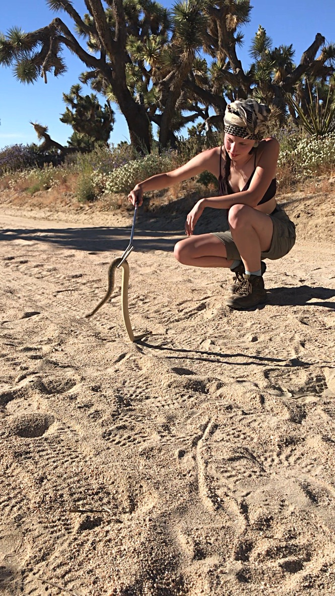
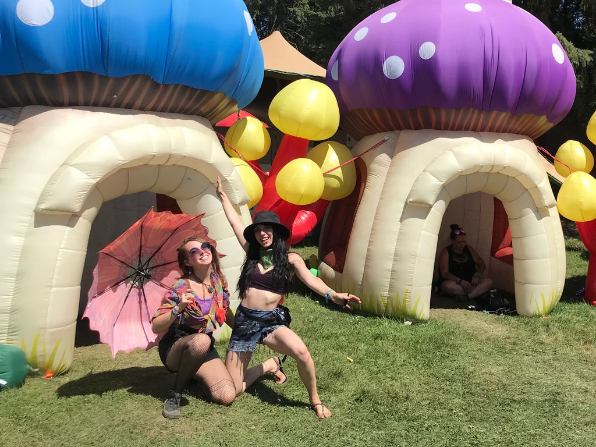
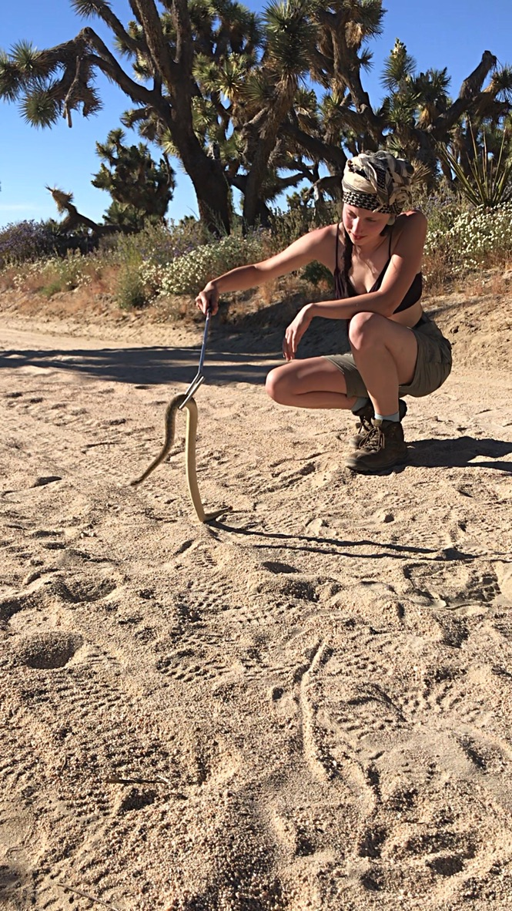
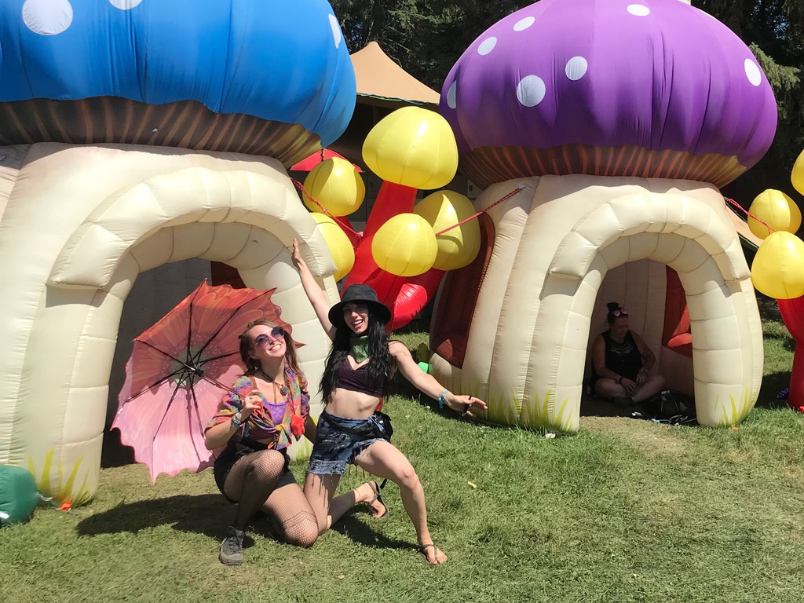
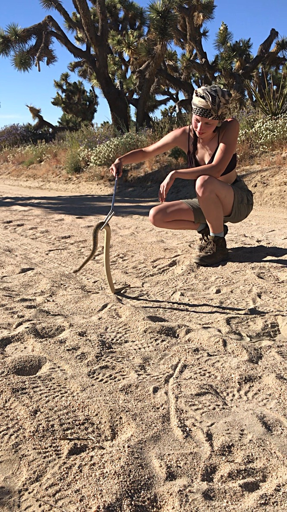
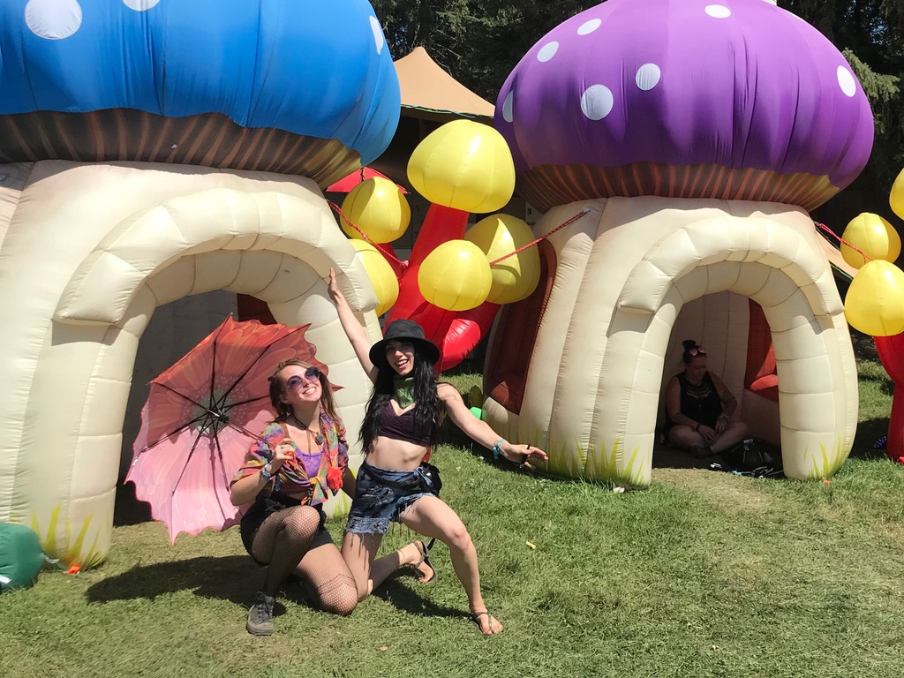
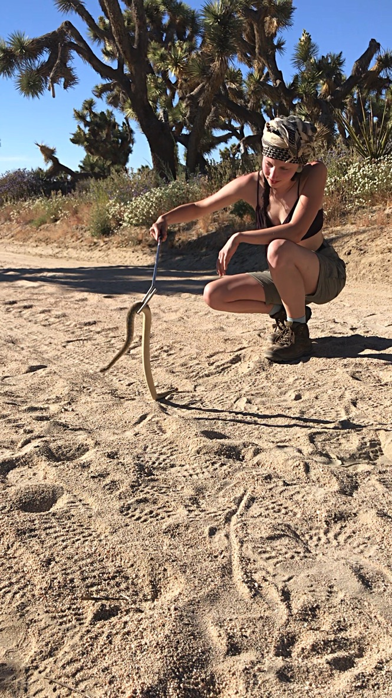
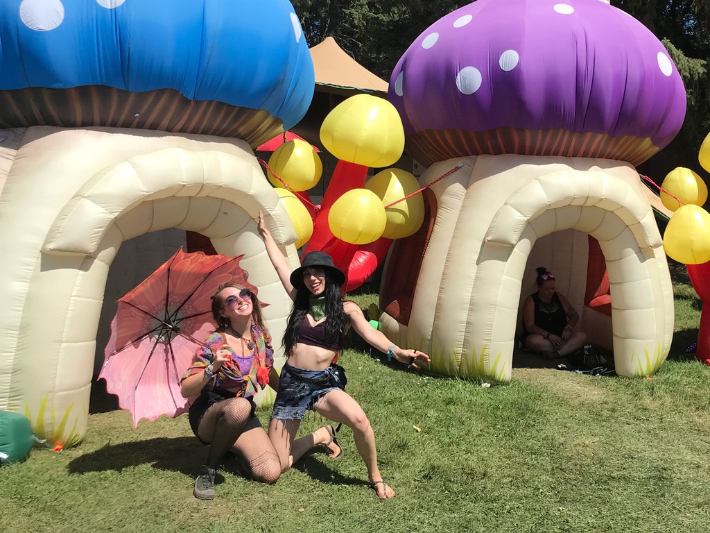

You can always track my progress from my Github account!
This page used HTML and CSS to showcase all the reasons I adore my cat.
This self project showed me the importance of clean code over a "nice looking" page. I used HTML and CSS to design the page.